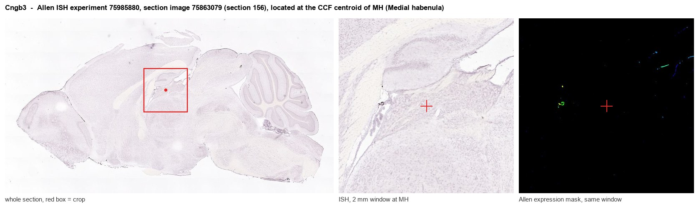
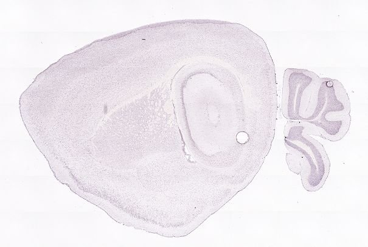
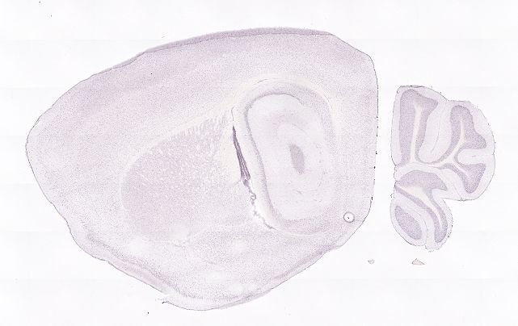
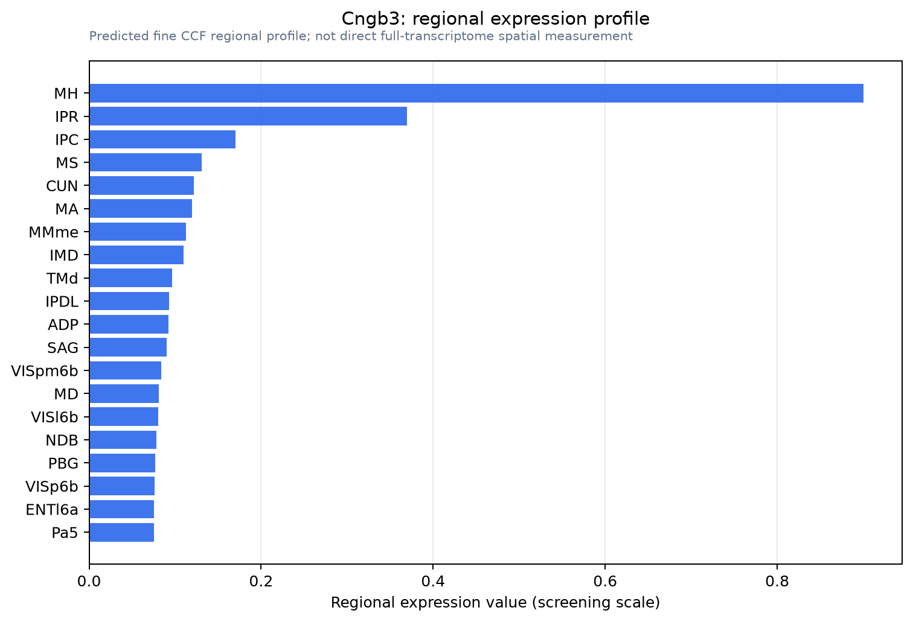

Cngb3
Cyclic nucleotide-gated channel beta-3 (CNG channel beta-3) (Cone photoreceptor cGMP-gated channel subunit beta) (Cyclic nucleotide-gated cation channel beta-3) (Cyclic nucleotide-gated cation channel
Spatial tier: STRICT_EXCLUSIVE · Class: ION_CHANNEL · Top region: MH (Medial habenula) · Positive regions: 2/554
Function in MH: evidence, prediction, innovation
- Gene function
- CNGB3 is the modulatory beta subunit of the cone photoreceptor cyclic nucleotide-gated channel. It co-assembles with CNGA3 into a tetramer that opens when cGMP binds, letting Na+ and Ca2+ into the cell; CNGB3 itself cannot form a functional channel but sets ligand sensitivity, single-channel behaviour and block. Human CNGB3 mutations are the commonest cause of achromatopsia.
- Region function
- The medial habenula is an epithalamic relay whose cholinergic/substance P neurons project almost exclusively through the fasciculus retroflexus to the interpeduncular nucleus. This MHb-IPN axis sets nicotine aversion and withdrawal, fear memory expression, anxiety and negative affect.
- Published in this region
- inferred No region-specific literature found. The closest related work is on native heteromeric CNG channels in olfactory sensory neurons, where a CNGB subunit combines with CNGA subunits to set cyclic-nucleotide sensitivity (Boenigk et al. 1999, J Neurosci), while all CNGB3 phenotypic work concerns cone dysfunction and achromatopsia.
- Predicted function
- Prediction: in MHb a CNGB3-containing channel would act as a cGMP-gated depolarising cation conductance, giving nitric-oxide and natriuretic-peptide signalling a direct route to change firing rate in a nucleus that already shows strong cGMP/PDE2A-dependent modulation. Knockout is predicted to blunt cGMP-evoked depolarisation and Ca2+ entry in MHb neurons with no visual-system confound at the circuit level; L-cis-diltiazem application should reduce tonic MHb activity.
- Innovation
- ★★★★★ 5/5 A cone phototransduction subunit enriched in a limbic nucleus is completely unstudied there, and cGMP signalling is already known to be functionally important in MHb.
- Tools
- Cngb3 knockout mice (achromatopsia models); CNG channel blocker L-cis-diltiazem; membrane-permeant cGMP analogues (8-Br-cGMP, CPT-cGMP) and guanylyl cyclase stimulators; CNGB3 antibodies developed for retina.
- References
Direct evidence located at the region

Allen ISH experiment 75985880, section image 75863079 (section 156): the section that contains the CCF centroid of Medial habenula according to the Allen image-to-atlas alignment (reference_to_image), with a 2 mm window around that point. Left: whole section, red box = window. Middle: ISH signal. Right: Allen's expression-mask view of the same window. open this image in the Allen viewer
Direct spatial evidence



Regional expression figure

Predicted WMB × fine-CCF profile; not direct full-transcriptome spatial measurement.
Spatial profile
Evidence and specificity
- Evidence status
- PREDICTED_FINE
- Direct sources
- None; predicted localization only
- Exclusive threshold
- 12 positive regions out of 554
- Spatial specificity
- 0.451
- Top-region fraction
- 0.291
- Filter status
- PASS
Interpretation limits
- Cell-type-to-region projection is imputed expression, not direct spatial measurement.
- Adult reference atlases do not establish stability across age, sex, strain, state, or disease.
- Transcript abundance does not guarantee protein abundance or genetic-tool performance.